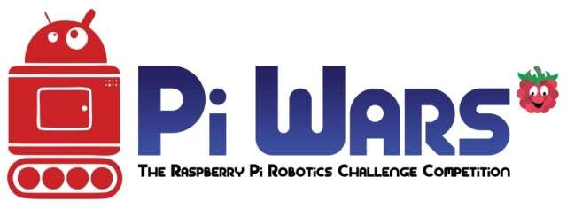

Meetings
This section includes all the 'after-action' reports of the Games Creators Club weekly meetings.
Meetings are held in the evenings at Kenilworth School during term time. The club currently has members from Year 7 to Year 11. If you are a student at Kenilworth School and you would be keen to join, let your form tutor know and they can put you in touch with the organisers.
Alternatively, you can follow along with the meetings and content using the articles posted here.
I don’t think you want to do that Dave…
- Details
- Published on Wednesday, 19 October 2016 11:13
- Written by Edward Powell
- Hits: 16
 In
this session we are going to begin thinking about AI by adding a
computer opponent to our number guessing game. Along the way we are
going to introduce two new important concepts – logical combinations
when making decisions and extending the available commands by adding a
function.
In
this session we are going to begin thinking about AI by adding a
computer opponent to our number guessing game. Along the way we are
going to introduce two new important concepts – logical combinations
when making decisions and extending the available commands by adding a
function.
The new version of the game is going to introduce a competitive element to the game by having the computer guess the code number each time the player does. Instead of the simple ‘higher’ ‘lower’ feedback we provided we will instead indicate who is closer to the answer each round. This is adds two elements to our game – a competitive tension and a clue that allows the player to improve there skill at the game with practice. We’ll discuss what makes a ‘good’ game many times over the coming sessions I am sure!
Functions
So far we have coded using commands, or functions, that already form part of the Python language and libraries. A function is a self-contained mini program that completes a calculation or task in its own right. They are very important for structuring more complicated programs and allowing you to re-use your code effectively. Functions often receive the data on which they will operate in the form of an ‘argument list’, which is passed to the function inside a pair of brackets () that follow the function name. A good example of a function is print() where you would normally pass the string of text you want to print as an argument (inside quotes and between the brackets) and the print function just does its thing without you having to worry about the ‘mini-program’ inside.
Our function is going to compare two values and return the absolute difference between them for us to use to give a clue back to the player as to their next guess. At the top of our program we start by defining the function we are going to use as follows:
def difference(x, y):
if x >= y:
result = x - y
else:
result = y - x
return result
As you can see we start with the Def keyword, our function’s name and the arguments it is going to use. The rest of the code is just a mini-program that does its stuff and returns the answer.
Once defined, we can use our function just like any pre-existing one – we’ve effectively *extended* the language, how cool is that?
I’m never going to not do the opposite…
The other new concept to introduce logical combinations in our decisions. In our new game design, we need to check if either the player *or* the computer has one.’Or’ is the first of several ways of combining questions to make a decision the other really important one is ‘and’. If you check to see if one thing is true ‘or’ another thing is true – then the decision will be triggered if either one is true. If we only want to trigger the decision if both things are true we can use ‘and’ instead.
Here is the code in its entirety, see if you can locate all the logical decisions being made and follow the flow of the program:
import random
def difference(x, y):
if x >= y:
result = x - y
else:
result = y - x
return result
answer = random.randint(1, 100)
print('I have selected a number between 1 and 100.')
# Main game loop, only exits when there is a winner using 'break'
while True:
# Lets get the player and computer guesses
player_guess = int(input('Your guess? '))
computer_guess = random.randint(1,100)
print('Computer guess is: ' + str(computer_guess))
# Has either one won?
if computer_guess == answer or player_guess == answer:
break
# See who is closest?
player_guess_difference = difference(answer, player_guess)
computer_guess_difference = difference(answer, computer_guess)
# Print a clue
if player_guess_difference > computer_guess_difference:
print('The Computer is closer...')
elif player_guess_difference == computer_guess_difference:
print('You are both neck and neck')
else:
print('You are closer. Nearly there...')
# We get here once we break from the loop, but who has won?
if computer_guess == answer:
print('You LOSE. Sorry, it seems your computer is smarter than you.')
else:
print('You WIN. Phew, you are still the boss!')
Don’t forget: half-term next week, so no computer club during the holiday!
That’s Numberwang!
- Details
- Published on Wednesday, 19 October 2016 09:15
- Written by Edward Powell
- Hits: 13
 GCC
was *packed* last week and it was great! We covered a lot of ground
with many key elements of coding that we will find ourselves using time
and time again.
GCC
was *packed* last week and it was great! We covered a lot of ground
with many key elements of coding that we will find ourselves using time
and time again.
The key things we discusses were:
- Repeating sections of code – the while loop
- Decisions – if, elif, else & the while loop logic
- Converting data types – str() & int()
- The ‘main game loop’ structure
I will run through these again in our next session, but in the meantime here is Nick’s code in its entirety for you to look at. Can you follow the flow of the code and pick out each element from the list above?
import random
answer = random.randint(1, 100)
print('I have selected a number between 1 and 100.')
lives = 3
while lives > 0:
guess = int(input('Your guess? '))
if answer == guess:
print('Correct')
break
else:
lives = lives - 1
print('Incorrect, try again')
if guess < answer:
print('Too low!')
else:
print('Too high!')
if lives == 0:
print('Sorry, you have no more guesses.')
For comparison, here is a near identical game created with slightly different underlying logic. Can you follow the flow of this code? Can you highlight the differences and the similarities between the two approaches to the same problem? It is interesting to see that there can be many different code solutions to the same problem.
import random
tries = 6
attempts = 0
secret = random.randint(1, 99)
guess = 0
print("Access DENIED: This system is locked with a code between 1-99")
while guess != secret and attempts < tries:
remaining = tries - attempts
print("You have " + str(remaining) + " remaining attempts")
guess = int(input("Enter Code Now..."))
if guess < secret:
print("Code FAIL: Too low. Don't you know any bigger numbers?")
if guess > secret:
print("Code: FAIL: Too high. Calm yourself & try a smaller number")
attempts = attempts + 1
if guess==secret:
print("Confirmed!")
print("Access ENABLED: Please proceed to Nuclear Missile launch control. Have fun...")
else:
print("Access LOCKED: Black helicopters have been dispatched to your location.")
print("Before you are terminated, you may as well know that the code was " + str(secret))
Next session we will look at competing against our first computer opponent!
GCC Starts Tomorrow!
- Details
- Published on Tuesday, 13 September 2016 09:30
- Written by Edward Powell
- Hits: 76
I hope everyone has had a fantastic break over the summer. We will be kicking off the first session of GCC tomorrow evening (Wednesday 14 September, 19:00-20:00) but *please note* we will be in L27 this year (where we had the last couple of session of last year).
We have some cool new stuff to get into this year. As well as extending you python skills, we should have access to Unity 3D game development using the new computer suite. I’ve also entered us into the PiWars competition early next year (1 April, 2017 in Cambridge). This will involves us designing, building and programming an autonomous robot to compete in various challenges. Plenty of interesting stuff for everyone! See you there…
News Flash: GCC moved to L27
- Details
- Published on Wednesday, 13 July 2016 16:19
- Written by Edward Powell
- Hits: 157
Last minute change of location for tonight’s meeting because of work going on our usual computer lab.
{kind=link}
GCC will be in L27 (just around the corner) from 19:00 – usual time.
Please bring your own laptop if you can because we won’t have access to our usual school PCs.
Crash, Bang, Wallop! – Collisions
- Details
- Published on Wednesday, 13 July 2016 11:05
- Written by Edward Powell
- Hits: 168
 This
session we are going to add collision detection between our particles
and make them ‘bounce’ off one another. This will actually come down to 3
separate tasks.
This
session we are going to add collision detection between our particles
and make them ‘bounce’ off one another. This will actually come down to 3
separate tasks.
Firstly we need to know when to particles have collided (collision testing, or detection).
Secondly we need to change the behaviour of the particles to respond to the collision - for now this will simply be to make them bounce apart.
Thirdly we need to catch a tricky problem common to all physics simulations – stickiness! Because we will be testing for collisions at discrete moments in time (whenever our collide function is called in the main game loop) there are going to be occasions where we have just missed the actual moment of collision. At this point our particles will be overlapping and begin to repeatedly trigger our collision test make the particles ‘bounce’ constantly in opposite directions each call – the visual effect of this will be to make the particles appear stuck together. To avoid this problem we will also add a bit of code to ensure that, in addition to causing the particles to bounce, we also make sure we remove any overlap.
Checking all the particles once, but only once!
Lets start with how we are going to call our collision code. Naively, for each particle we could just insert a second loop to check against the particle list particle by particle – but wait… A simple nested loop will actually check every *pair* of particles twice – A with B, and then later B with A. We want to avoid this duplication as well as avoid checking particles against themselves – A with A and B with B etc.
To achieve this we will use a modified internal loop that only checks the particle against the other particles *that are later in the list*. To do this we need to modify the way we loop through the list in the outer loop so that we can keep track of the position in the list of the particle we are currently checking. Find the existing update-draw loop for each particle and replace it with this code:
for i, particle in enumerate(my_particles):
particle.move()
particle.bounce()
for particle2 in my_particles[i+1:]:
collide(particle, particle2)
particle.display()
Can you see how this works? Enumerating the particle list means that the variable i will keep track of the index of each particle in the list as we iterate through it. We can use i to begin the nested for loop from 1 place further on in the list than the particle being tested. The function that we call – collide – will test to see if the pair of particles are in collision and act upon them if they are. Let’s look at that next.
Collision Testing & Handling
The collide function should be added under the existing findParticle function, before the Particle class definition. Here is the collision code in its entirety:
def collide(p1, p2):
dx = p1.x - p2.x
dy = p1.y - p2.y
dist = math.hypot(dx, dy)
if dist < p1.size + p2.size:
tangent = math.atan2(dy, dx)
angle = 0.5 * math.pi + tangent
angle1 = 2*tangent - p1.angle
angle2 = 2*tangent - p2.angle
speed1 = p2.speed*elasticity
speed2 = p1.speed*elasticity
(p1.angle, p1.speed) = (angle1, speed1)
(p2.angle, p2.speed) = (angle2, speed2)
# Move overlapping particles apart
separation = (p1.size + p2.size - dist) / 2.0
x_separation = math.sin(angle) * separation
y_separation = math.cos(angle) * separation
p1.x += x_separation
p1.y -= y_separation
p2.x -= x_separation
p2.y += y_separation
Initially you can see that we simply find the difference in x positions (dx) between the particles’ centres and the difference in y (dy). We use basic Pythagoras to find the distance between the centres of the particles (the hypotenuse of the dx dy triangle).
The collision test is now simply to see if this distance is less than the combined sizes of the particles – this should all be familiar to those of you who worked through the asteroids game.
If there is a collision, we change each particle’s movement angle and make them appear to bounce – I will go through the theory in the session.
Parting is such sweet sorrow
Finally, we need to deal with the ‘sticky’ problem of intersecting. If, at the moment we check them, the particles have already overlapped, then simply changing their speeds and angles is going to leave us in a tricky state. On the very next loop around our code, and despite the fact that they are now moving apart, we may well find them in collision again (because they were overlapped) and ‘bounce’ them again… and again… and again. This causes a very obvious glitch. To solve it we must ensure that we not only leave our particles moving apart, but also ensure that they are forcibly separated before the next time around the loop. We do this in the code by finding the separation required to ensure that the particles are *not* overlapped and then we simply force their positions apart by setting the particles’ x y values directly.
Once you have the code working, try commenting this section of code out and see what happens without it, Can you see and understand why the problem occurs? It’s a good one to think about as similar issues can often turn up in timing, or sampling, loops.
Projects for the Holiday
Hopefully you can see that you have an interesting ‘engine’ for a whole variety of games at the end of this session – see what you can do with it over the summer and I look forward to playing some of your games next term.